ספר העבודה של תמונות המותג
איך אנחנו מגבשים רעיון והופכים אותו לתמונה של Hear. נכתב אחרי יומיים של עבודה, 16–17 בנובמבר 2026, שבסופם אושרו ארבע תמונות עולם. לחיצה על תמונה פותחת אותה בגודל מלא.
1. העיקרון
העולם משולב עם הפרסום.אופיר: "היה ניסיון ישן להכניס את ה-UI על גבי העולם, לעומת שהעולם יהיה אינטגרטיבי עם הפרסום"
- המסר כתוב על ידי העולם עצמו. קבלה על שולחן, עשן של מטוס, בלוני אותיות, בלוני מספרים. לא כותרת ולא כרטיס מוצר מעל ציור.
- ציור אחד, רעיון אחד, מעט מילים. המילים הן חפץ בתוך הסצנה.
- העיר של Hear. מגדלי זכוכית, שמיים בכחול קובלט עם עננים עבים, קורל, סגול, ירוק, פרחים ואנשים. ציור בסכין, בסגנון בוגר.
- טון חגיגי, שנון ואופטימי.
- סדרה. אותה עיר, וכל פעם קורה בה משהו אחר.
- נקודת מבט של אדם שנמצא בתוך הסצנה.
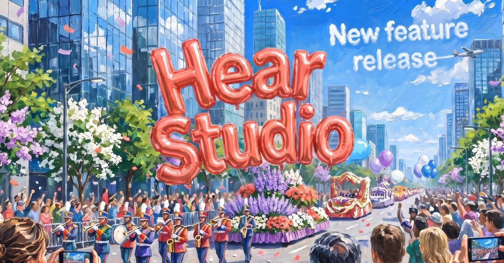
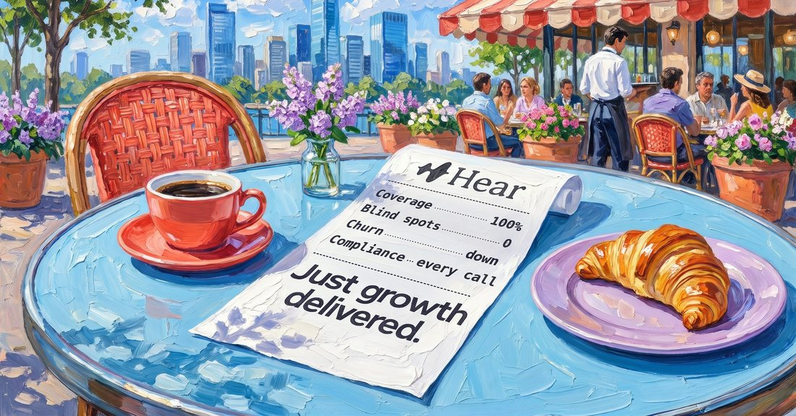
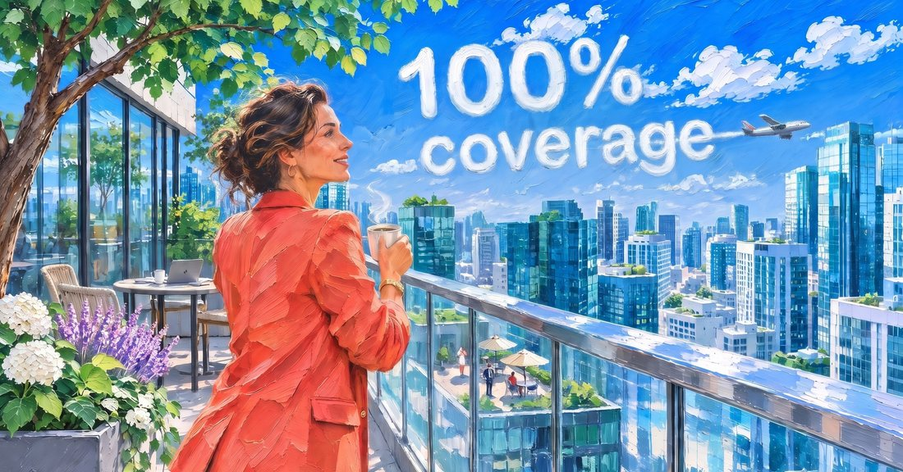
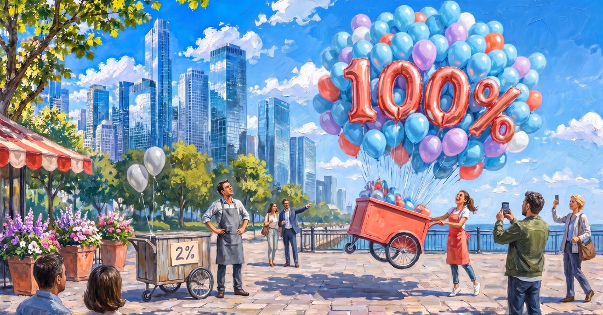


2. המבחן שכל רעיון עובר
מה אדם זר מבין מהתמונה על Hear?אם אין משפט אחד כזה, אין רעיון. מתחת לכל תמונה למעלה כתוב המשפט שלה.
3. סדר העבודה
כל שלב מסתיים באישור של אופיר. לא מדלגים.
- הרעיון, במילים. מה רואים, איפה המילים חיות בסצנה, ומה מבינים. הרעיונות הטובים ביותר הגיעו מאופיר.
- שלוש קומפוזיציות ברזולוציה נמוכה. צורות אפורות ביחס של הפורמט הסופי, וצבע אחד למקום של המילים. נבנות בקוד, בלי עלות. לכל אחת שורת הסבר, והמלצה אחת.
- אופיר בוחר קומפוזיציה, או מתאר אחת משלו.
- ציור אחד. רק עכשיו נוצרת תמונה.
- תיקונים ממוקדים. עריכה אחת לכל בעיה, מהבסיס הנקי.
- בדיקה בגודל של פוסט אמיתי, בתוך מוקאפ פיד.
- אישור, ואז לעמוד הנכסים.
שער שאסור לעבור: לא נוצרת שום תמונה, גם לא "סקיצת רעיון", לפני שהרעיון והקומפוזיציה אושרו. אישור אחד מכסה רעיון אחד. עובדים על תמונה אחת בכל פעם.
דוגמה: מהסקיצה לפוסט
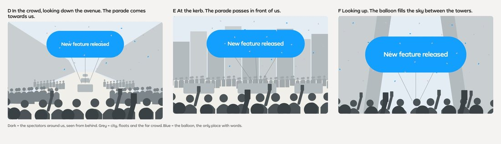
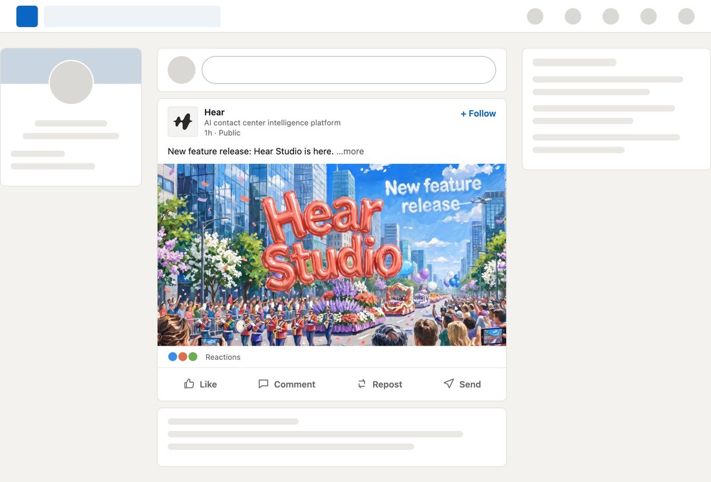
סקיצות הקומפוזיציה של שלוש התמונות האחרות
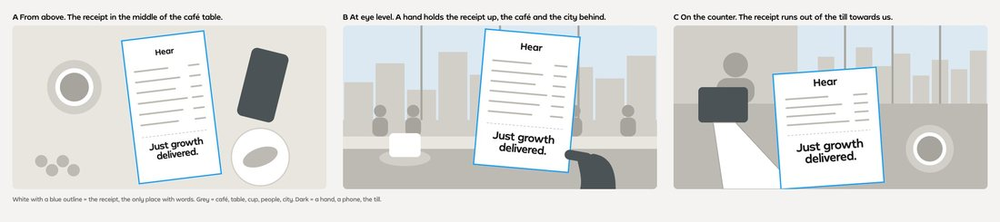
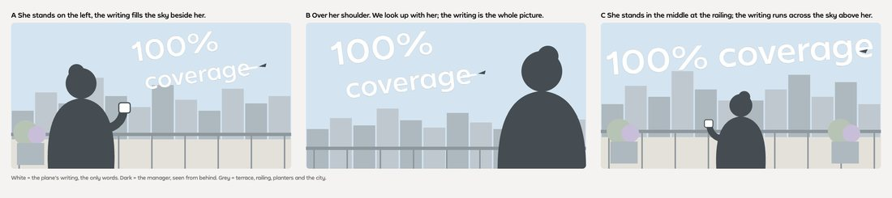
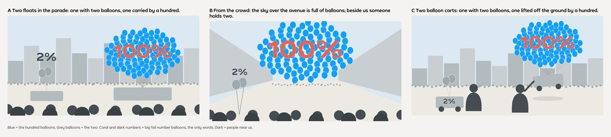
4. איך מציירים
Google gemini-3-pro-image, דרך docs/video-factory/brand/world-images/google-paint.mjs. לכל תמונת ייחוס יש תפקיד אחד:
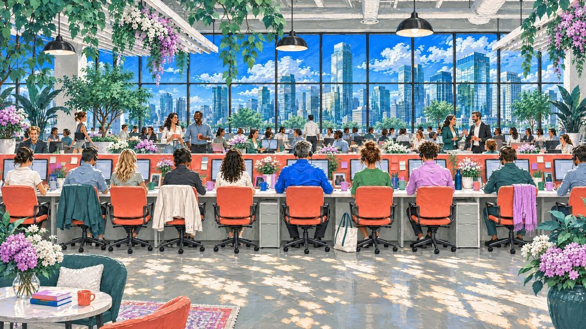
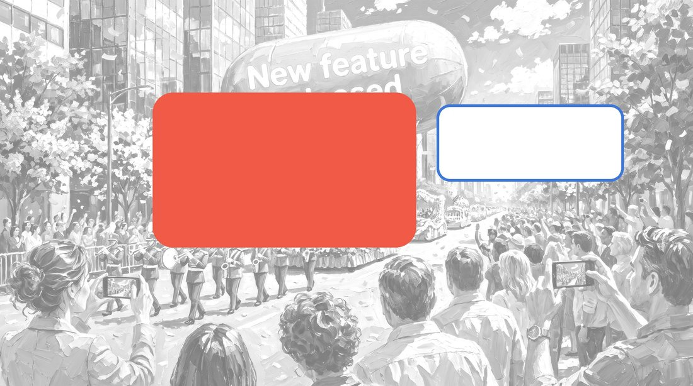
כללים שנלמדו בדרך הקשה
- עורכים תמיד מהבסיס הנקי, בעריכה אחת. עריכה של תמונה שכבר נערכה כמעט לא משנה אותה ופוגעת בציור.
- לא מבקשים נקודת מבט חדשה על תמונה קיימת. המודל מחזיר כמעט את אותה תמונה. מתארים מאפס, עם ייחוסים וסקיצה.
- "להוסיף נפח" לא עובד. מה שעובד: "למחוק לגמרי ולצייר מחדש".
- הסרה של אובייקט אחד בעריכה עובדת היטב. כך ירד הבלון השלישי, וכך ירדו המגדלים מאחורי הכתב.
- מיקום וגודל של טקסט עושים בהרכבה. מבקשים "לוח נקי" בלי האותיות, גוזרים אותן ומניחים מחדש.
- טקסט בתוך סצנה מצוירת נותנים כתמונת ייחוס, והמודל מצייר אותו פנימה. טקסט דיגיטלי שמודבק על ציור נראה כמו מדבקה.
- כל כתב בסצנה: עבה, פשוט, זקוף ומעוגל.
- סופרים את החפצים שנושאים את המסר.
- העושר נמצא בכל מקום מלבד האזור שמסביב למסר, שנשאר פתוח.
ההנחיות המלאות שעבדו שמורות ליד כל תמונה: parade-studio-prompt-6.txt, receipt-seated-prompt-3.txt, plane-prompt-4.txt, plane-prompt-5.txt, balloons-prompt.txt.
5. בדיקות לפני שמראים
- יש משפט אחד של מה מבינים על Hear.
- המסר הוא חפץ או אירוע בתוך העולם, לא שכבה מעליו.
- כל מילה ומספר מאויתים נכון. בודקים בהגדלה.
- שום דבר לא מכסה אות, ושום בניין או ענן לא חוצה את המסר.
- המסר גדול וקרוב למרכז. נבדק בתוך מוקאפ הפיד.
- הכול מצויר בסכין: גם השמיים, גם האותיות, גם המטוס.
- העולם מלא: עיר צפופה, אנשים, פרחים, אור וצל.
- נקודת מבט אחת ועקבית, וקנה מידה הגיוני.
- החפצים שנושאים את המסר נספרו.
- הסגנון בוגר, לא ילדותי.
- נאמר מה לא נבדק, ומה ניסוח או מספר שלי.
6. מה נפסל ולמה
כל דוגמה היא משהו שהכנתי ונפסל, התגובה של אופיר, והלקח.

ניסיון ישן להכניס את ה-UI על גבי העולםהעולם משולב עם הפרסום
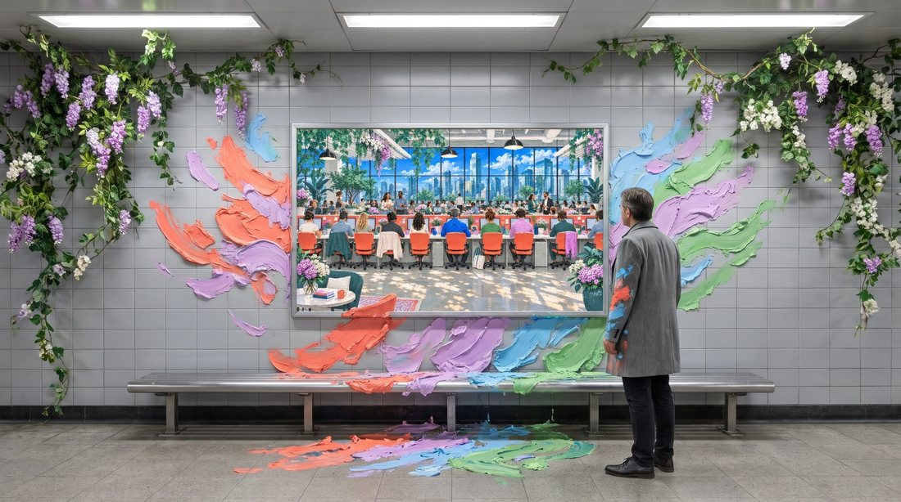
קשקוש בלבוש… מה מישהו אמור להבין מזהקודם המשפט של מה מבינים
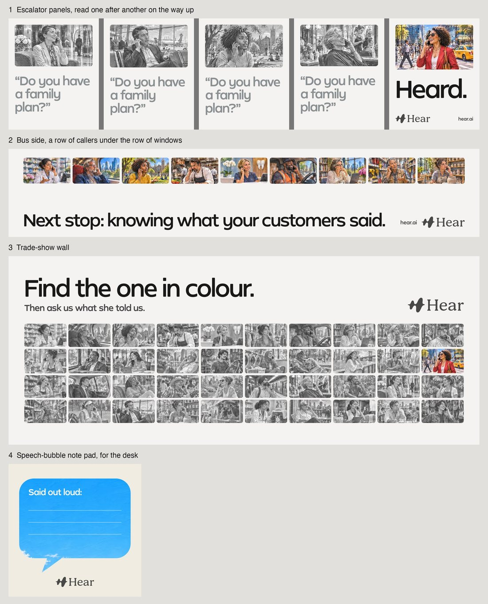
את ממשיכה לעשות את אותו דברמנגנון אחד משרת פריט או שניים
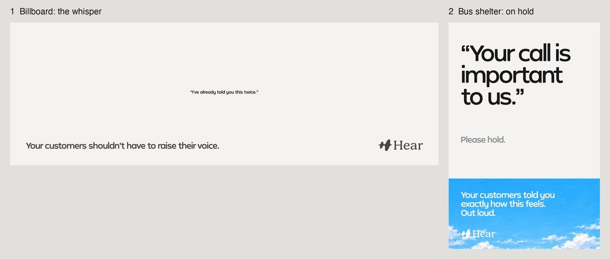
משעמםהרעיון בתמונה, לא בקופי
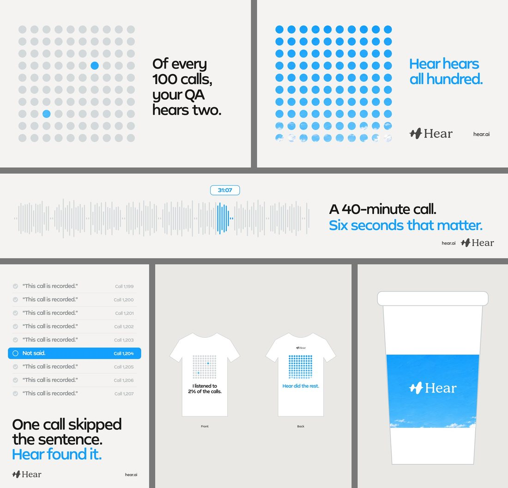
זה לא מרגיש מעוצב בכללסקיצה אינה עיצוב
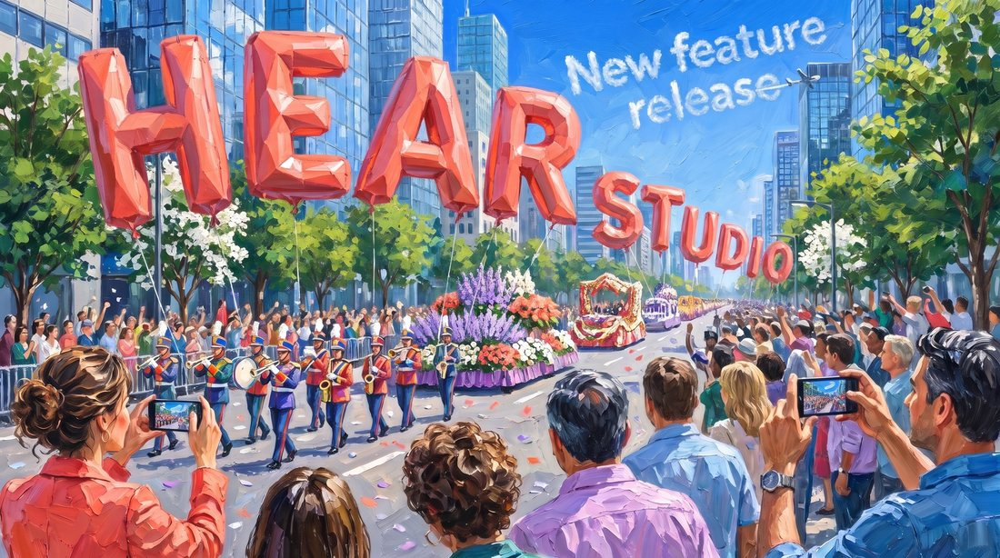
יוצא מהשדרה… לא מרקם של בלון… אמורה להיות עשירה במלא מיצגיםהשם הוא מיצג אחד קומפקטי, מחומר אמיתי
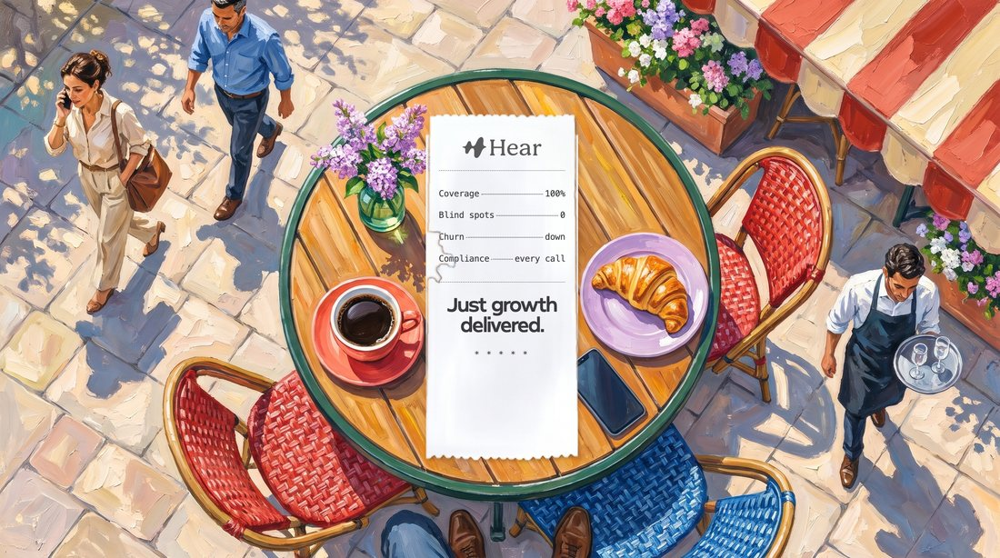
הקבלה נראית מרחפתהנייר מצויר בתוך הסצנה, מנקודת מבט של מי שיושב

קצת שטוחה ויוצאת מהברנד, לא מספיק חיהגם השמיים מצוירים, והעולם מלא
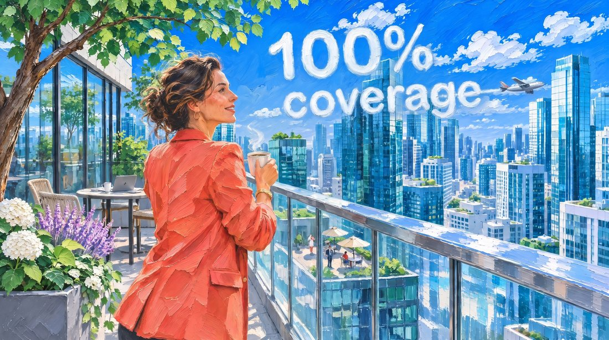
הבניינים עולים על הטקסט והמטוס נכנס בבנייןאזור המסר נשאר פתוח
| עוד דברים שנפסלו, בלי תמונה | התגובה | הלקח |
|---|---|---|
| האתר עצמו על קיר של תחנה | "תוצאה ממש עצלנית" | צריך רעיון, לא העתק של האתר |
| תמונות שנוצרו לפני שהרעיון אושר | "אמרתי לך לא להכין מוקאפים עד שאישרתי את הרעיון" | סדר העבודה מחייב |
| חפצים מצוירים עבים וחמודים | "ילדותי" | סגנון בוגר |
| בלון עגול עם טקסט עליו | "משעמם" | הבלון עצמו בצורת האותיות |
| כתב דק ומסולסל בשמיים | "קשה מאוד לקריאה" | עבה, פשוט, זקוף |
| טקסט קטן וגבוה בתמונה | "אמור להיות יותר במרכז ויותר גדול" | שופטים בגודל הפיד |
| שולחן בכתמי סכין בלי קרשים | "נראה כמו רצפה או חול" | משטח צריך מבנה של חומר |
| תיק עם ציור בתוך בועה, ולוגו ממולא בצבע | "לא נראה לי טוב" | לא מציעים שוב לוגו מצויר או ממולא |
7. איך עובדים מול אופיר
- להראות, לא לתאר. הוא בוחר כשהוא רואה שלוש אפשרויות, לא כשהן מתוארות במילים.
- כשהוא מצביע על בעיה, מביאים רשימה קצרה של מה לא בסדר ומחכים. כך היה בקבלה: "בדיוק", ורק אז תמונה חדשה.
- כשהוא שואל "את מבינה מה הבעיה?", עדיף לבקש שיצביע מאשר לנחש.
- "הקודם יותר טוב": מחזירים מיד, ואומרים לאיזו גרסה חזרנו.
- כשביקש אפשרויות, לא מחליטים במקומו.
- לא לשכפל רעיון שעבד.
- אומרים מה לא נבדק, ומה ניסוח או מספר שלי.
- כל יצירה בתשלום נאמרת לפני, לא אחרי.
9. תמונת הנושא ללינקדאין: מה למדנו
אושרה רק אחרי יותר מעשרה ניסיונות שנפסלו. אלה הלקחים.

- תמונת נושא עונה על "מה החברה הזו". המשפט של המבחן נכתב עבור אדם זר, וכולל את התחום ואת מה ש-Hear עושה.
- הסגנון אבד ארבע פעמים, מאותן סיבות: תמונה שרוקנתי בשביל המסר, מצלמה קרובה לפנים, ניסוח סגנון ששיניתי, שרשרת עריכות, וחיבור של שני ציורים. מה שהחזיר אותו: ההנחיה של התמונות המאושרות מילה במילה, מבט רחוק, אנשים קטנים ומהגב, ציור אחד ועריכה אחת.
- המודל לא היה הבעיה. כשתמונה יוצאת מהסגנון, בודקים מה שיניתי בתהליך.
- פורמט של 6 על 1 מכיל שורה אחת. האנשים, קו הרקיע והמילים באותה רצועה.
- לא מחלקים תמונה לשניים. תמונה היא סצנה אחת רציפה.
- הסצנה חייבת להיות הגיונית. ענן לא נמצא בתוך משרד, וחייבים לראות שיש חלון. העמודים עוברים רק בין המילים.
- מיקום של מילים ושל עמודים עושים בהרכבה, לא בהנחיה.
- כשאופיר שואל שאלה, עונים עליה. לא מתחילים לצייר.
- את הלקח מתעדים אחרי שהתמונה אושרה.
10. רומא, אירוע שהיה: מה למדנו
הרעיון של אופיר מהפוסט המקורי, שפופרת ענקית על הקולוסיאום, עבר לעולם המצויר. אושרה אחרי חמש קריאות.
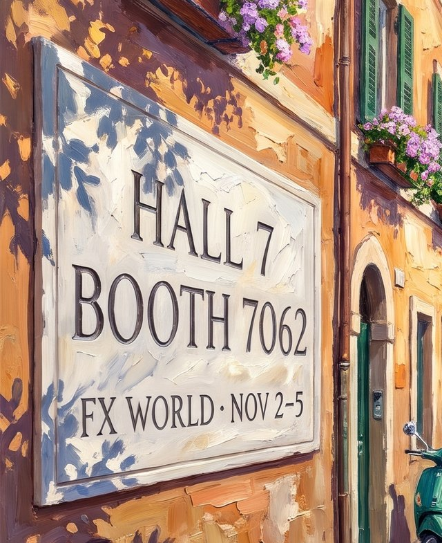
זה לא בפונט שלנו וקטן מידיהכתב בעולם הוא תמיד בפונט שלנו
- אירוע אמיתי שהיה הוא הוכחה טובה למותג. העולם המצויר יכול להיות גם עיר אחרת, באותם צבעים ובאותו סכין.
- הכתב בתוך העולם הוא תמיד בפונט שלנו, באותיות רגילות ולא בגדולות. בחרתי אותיות רומיות כי זה שלט שיש, וזו הייתה טעות: החפץ לא בוחר את הפונט.
- מבקשים כתב שהוא חלק מהחפץ: חקוק בשיש, מצויר על בד, בסכין. לא מבקשים "חד וקריא לגמרי". כך הוא יוצא משולב ולא מודבק.
- תיקון אחד בכל עריכה. עריכה עם שלושה תיקונים ביצעה שניים. שלוש עריכות של תיקון אחד עבדו כולן. מכל עריכה לוקחים רק את האזור שתוקן ומניחים על הציור הנקי.
- המודל מוסיף מילים משלו. כאן TRATTORIA, בעיתון NEWS. בודקים בהגדלה כל שלט ונייר בתמונה.
- כשאופיר אוהב שתי קומפוזיציות, מציירים את שתיהן. הוא בוחר מול ציורים, לא מול סקיצות.
- האותיות של המודל קרובות לפונט שלנו, לא זהות לו. אומרים את זה כשמציגים.
11. עיתון הבוקר: מה למדנו
רעיון שלי, שנבחר מתוך שלושה במילים. קומפוזיציה מהעיניים של הקורא. אושר אחרי שלוש קריאות.

הטקסט לא נראה שהוא על העיתון, זה נראה כמו טקסט מודבקביקשתי "חד וקריא לגמרי", וקיבלתי מדבקה
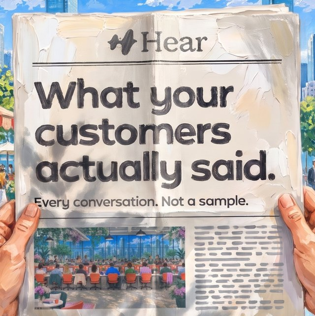
- כתב חלק על חפץ מצויר נראה מודבק. גם כשהמודל מצייר אותו בעצמו. הסיבה הייתה הניסוח שלי: "גדול, חד וקריא לגמרי".
- מה שתיקן: עריכה אחת שמוחקת את כל הדפוס ומציירת אותו מחדש כדיו על נייר, בסכין, עם שורות שמתעקמות עם הדף. רק הדף נלקח מהעריכה והונח על הציור הנקי.
- המחיר של השילוב הוא מעט חדות. צל עלים עבר על חלק מהכותרת. אומרים את זה כשמציגים.
- רעיון שלי עובר כשהוא מוצג קודם במילים, עם המשפט של מה מבינים, ואז בשלוש סקיצות.
- שם העיתון הוא הלוגו של Hear. לא ממציאים שם של עיתון, כי הוא עלול להיות שם של עיתון אמיתי.
12. הלוגו כענן: מה למדנו
בקשה של אופיר: גרסה של הלוגו שעשויה מענן, על שמיים כחולים. אושרה בניסיון השלישי.
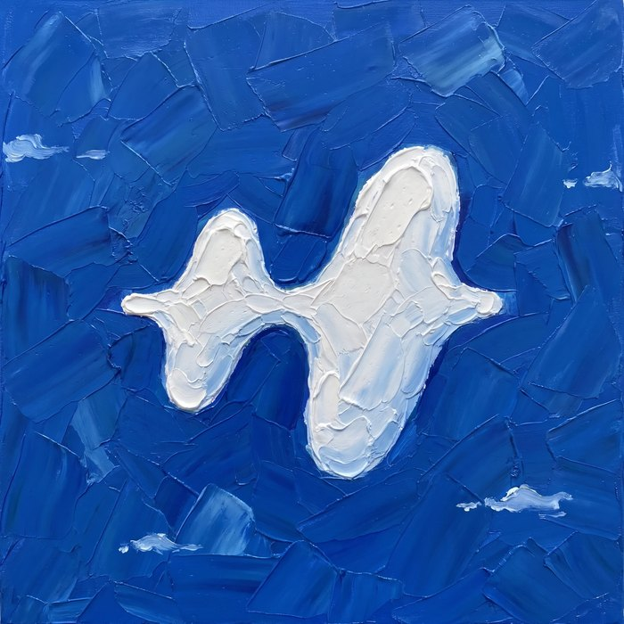
זה לא נראה כמו ענןשמרתי על הצורה, ואיבדתי את הענן
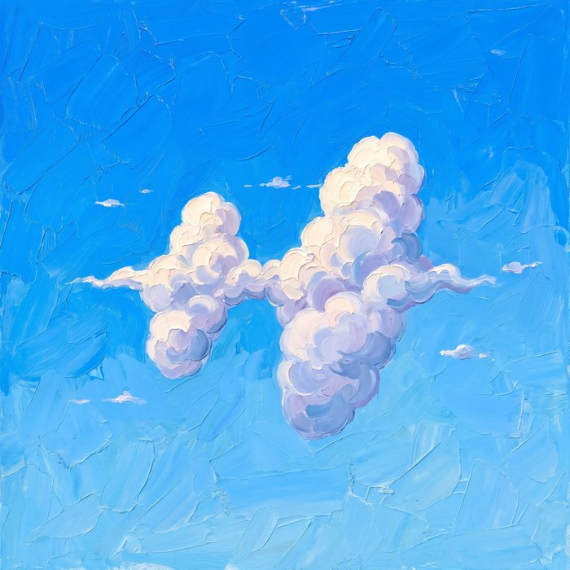
החלק הבהיר ממסמס אותולוגו לבן צריך רקע עמוק ואחיד
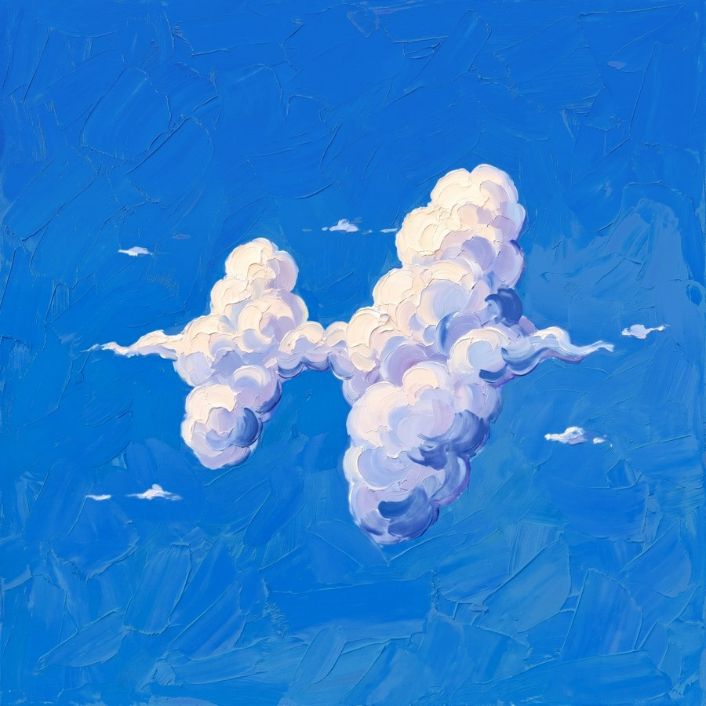
- "עשוי מענן" פירושו קודם כול ענן. ענן תפוח שבנוי מכדורים, עם אור מלמעלה וצל מלמטה. הצורה של הלוגו באה אחר כך, והיא קרובה ולא מדויקת.
- מתארים את הצורה במילים, בנוסף לתמונת הייחוס: גבנון קטן משמאל, גבנון גדול מימין, מותן באמצע, זנב לכל צד.
- לוגו לבן צריך שמיים עמוקים ואחידים. לא מבקשים שמיים שמתבהרים לכיוון האופק.
- תיקון של רקע עושים בקוד, על אותו ציור, בלי לצייר מחדש:
logo-cloud/deepen-sky.pyמעמיק את השמיים ולא נוגע בענן. - בודקים בגודל של תמונת פרופיל, 48 פיקסלים, ולא רק בגודל מלא.
13. מה עדיין פתוח
- הנתון של 2% לא מאומת, והוא כתוב בתוך תמונת הבלונים.
- "Churn … down" בקבלה הוא מקום־שמור, והערכים בה יושבים שורה מתחת לתוויות.
- הטקסטים של הפוסטים במוקאפים הם ניסוחים שלי.
- אף תמונה לא פורסמה. העמודים האלה מקומיים בלבד.
המסמך המלא, כולל המתכון הטכני, הקבצים והעלויות: docs/video-factory/brand/BRAND-PLAYBOOK.md